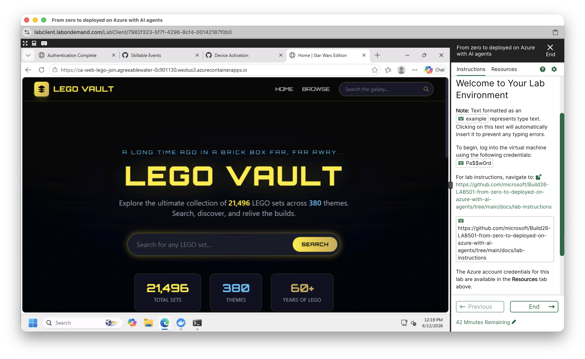
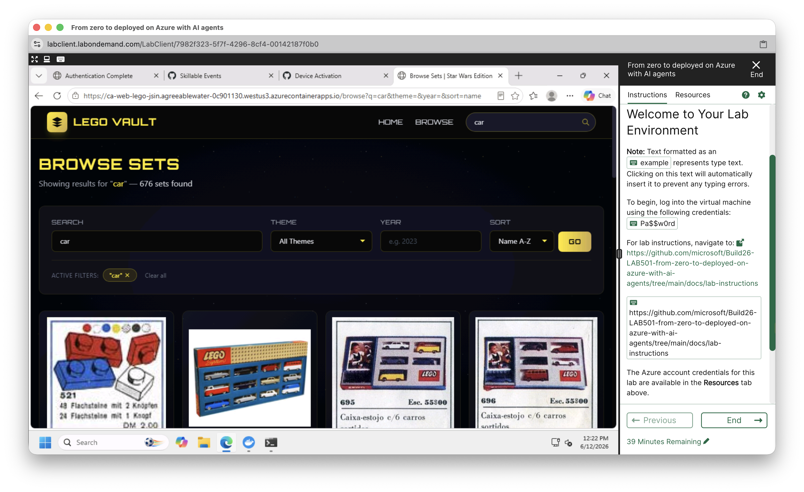

LAB501: From zero to deployed on Azure with AI agents
從零開始運用 AI Agents 部署 Azure 應用
Lab 快速入口
-
開啟 Skillable 平台：
開啟 Skillable Platform - 以你的 Microsoft 帳戶 登入。
- 登入後，點選頁面上方的 Redeem Training Key。
- 複製下方的 Training Key，貼到 Skillable 頁面中。
- 兌換成功後，請依照 Skillable 畫面指示啟動 Lab。
Training Key
小提醒：你也可以直接點選或長按上方 Training Key 手動複製。
今天的 Lab 目標
今天會體驗 LAB501 的核心流程：
Skillable → PowerShell → Copilot CLI → Azure Skills → Starter App → Azure deployment flow
目標不是強迫每個人都完整跑完官方 75 分鐘 Lab，而是理解 AI agents 如何協助開發者準備、驗證並部署 Azure 應用程式。
重要提醒：請使用 PowerShell
請打開 Windows PowerShell，不是 Command Prompt。
看到提示符號前面有 PS 就對了，例如：
PS C:\Users\...Docker Desktop 只要在背景啟動即可，主要指令請在 PowerShell 裡操作。
Checkpoint 1：啟動 Copilot CLI + Azure Skills
這個 Checkpoint 會完成 Copilot CLI 與 Azure Skills 的基礎環境設定。看起來步驟很多，但其實是在完成四件事：
- Azure CLI 登入：讓
az可以操作 Azure。 - Azure Developer CLI 登入：讓
azd可以執行 app deployment flow。 - GitHub SSO 登入：讓 Skillable lab 的 GitHub / Copilot 權限正常運作。
- Copilot CLI 登入：讓你可以在 terminal 裡使用 Copilot CLI 與 Azure Skills。
1. 登入 Azure CLI
az login請使用 Skillable Resources 分頁提供的 Work or school account 登入，不要使用私人 Microsoft 帳戶。
2. 登入 Azure Developer CLI
azd auth login3. 複製 GitHub SSO 網址，到 Skillable VM 裡開啟
請先複製下方網址，然後切回 Skillable VM，在開始列打開 Edge 瀏覽器，貼上網址進行 GitHub SSO。
https://github.com/enterprises/skillable-events/sso注意：不要只是在你自己的電腦瀏覽器開這個連結；請到 Skillable VM 裡面的瀏覽器開啟。
4. 啟動 Copilot CLI
copilot5. 在 Copilot CLI 裡登入 GitHub
/login6. 依官方 Lab 指示關閉 Rubberduck Agent
Update the settings.json for Copilot CLI to disable rubber duck with this, "builtInAgents": {"rubberDuck": false},Rubberduck Agent 不是本 Lab 的主角；這一步只是依官方 Lab 指示關閉不需要的內建 agent，避免干擾 Azure Skills 流程。
7. 安裝 Azure Skills Plugin
Copilot CLI 一次只能執行一個 slash command。請分三次複製、分三次貼上，不要一次貼三行。
/plugin marketplace add microsoft/azure-skills/plugin install azure@azure-skills/mcp reload/mcp reload 後，請關閉 PowerShell，重新開啟 PowerShell，再繼續下一個 Checkpoint。
Checkpoint 2：取得 LAB501 Starter App
重新開啟 Windows PowerShell 後，貼上以下指令：
git clone https://github.com/microsoft/Build26-LAB501.git
cd Build26-LAB501
Copy-Item -Recurse src lego-set-browser
cd lego-set-browser
git config --global user.name "Jia-Sin Chen"
git config --global user.email "jarsing@gmail.com"
git init
git add -A
git commit -m "init"Starter App 是官方準備好的 Python Flask LEGO set browser。今天重點不是從零寫網站，而是看 AI Agent 如何協助部署。
Checkpoint 3：啟動 Copilot YOLO 模式
確認你目前在 lego-set-browser 資料夾裡，然後輸入：
copilot --yoloCheckpoint 4：官方核心 Prompt
請在 Copilot CLI 裡貼上以下官方 Prompt。這會觸發 Azure Skills 的核心流程：
azure-prepare → azure-validate → azure-deploy
Create and deploy 2 Azure services
**Environment:**
- Subscription: Current subscription
- Create a new resource group: rg-lego-set-browser-dev
- Region: West US 3
**Existing Cosmos DB (do NOT create a new one):**
- Look for the existing cosmos DB in the current subscription
- Database: LegoDatabase / Container: legoSets
**1. Python Azure Function App** — HTTP POST trigger on Flex Consumption (FC1):
- Accepts JSON array of LEGO sets; batch-upserts to Cosmos DB above
- Fields: set_number (→ id), name, theme_name, year_released, number_of_parts, type, image_url
- User-assigned managed identity for Cosmos DB (Built-in Data Contributor)
**2. Flask app in this folder → Azure Container Apps:**
- Name: ca-web-lego-changhua
- Already uses DefaultAzureCredential + env vars COSMOS_ENDPOINT, COSMOS_DATABASE, COSMOS_CONTAINER
- System-assigned managed identity for Cosmos DB (Built-in Data Reader)這段 Prompt 在做什麼？
這段 Prompt 會請 Copilot CLI 搭配 Azure Skills 建立並部署兩個 Azure 服務：
- Python Azure Function App：接收 LEGO sets 的 JSON 資料，並寫入 Cosmos DB。
- Flask App → Azure Container Apps：把目前資料夾裡的 Python Flask LEGO set browser 部署成雲端網站。
它會使用既有的 Cosmos DB，資料庫是 LegoDatabase，容器是 legoSets，不會建立新的 Cosmos DB。
官方 Lab 的重點是觀察 AI Agent 如何依序觸發三個 Azure Skills： azure-prepare、azure-validate、azure-deploy。
三個 Azure Skills 在做什麼？
-
azure-prepare：讀懂專案，產生
azure.yaml、infra/、Bicep、Function code 等部署準備。 - azure-validate：部署前檢查，例如 Bicep、Docker、Python runtime、subscription access 等。
-
azure-deploy：執行部署流程，通常會跑
azd up --no-prompt，建立 Azure 資源並部署服務。
這三個不是我們手動輸入的 PowerShell 指令，而是 Azure Skills Plugin 裡的官方 skill chain。
成果畫面：LEGO 網站部署成功
當 Copilot CLI 跑完 Azure Skills 後，會得到一個 endpoint 端點網址。直接點擊該網址，就會打開瀏覽器，看到 Starter App 的 LEGO 網站成果。


car，可以看到多筆 LEGO 汽車相關套組。
Cosmos DB 是什麼？
Cosmos DB 是 Azure 的雲端資料庫服務。
在 LAB501 裡，LEGO set browser 的資料不是寫死在網頁裡，而是存在 Cosmos DB 裡。Flask 網站負責查詢與顯示資料，Azure Function 負責把 LEGO sets 寫入資料庫。
LEGO Browser 推薦搜尋關鍵字
如果 LEGO 網站部署成功，可以試著搜尋這些關鍵字：
car
train
city
space
technic
castle
dragon
star
robot
friends
animal
flower
cafe
disney
可以先試試 car，通常比較容易有結果；在彰化也可以試試 train，呼應彰化扇形車庫與鐵道意象。
活動後繼續完成完整 LAB501
今天現場只會帶大家體驗 LAB501 的核心流程。若你想繼續完成官方完整 75 分鐘 Lab，可以參考 Microsoft 官方 GitHub Repo：
開啟 LAB501 官方 GitHub Repo完整 Lab 內容包含 Starter App 部署、Azure Skills 的 prepare / validate / deploy 流程、Production Review、Troubleshooting 與 KQL 診斷等延伸練習。
遇到問題不用緊張
如果你卡在登入、Training Key、Lab VM 啟動、PowerShell、CLI 或 Azure login，請先跟著投影畫面觀看講者示範。
本場 Lab 已預留時間協助現場排除問題。